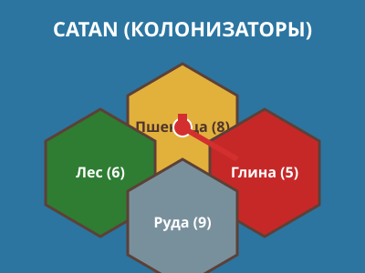
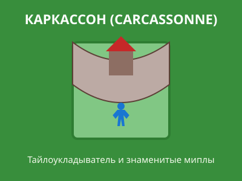
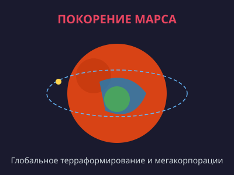
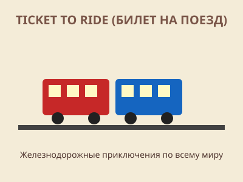
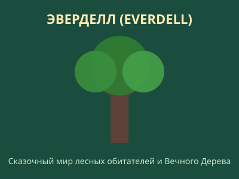
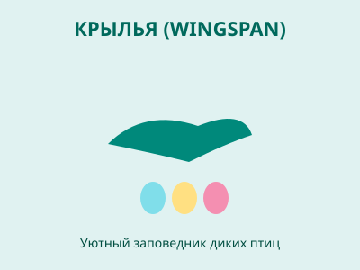

Энциклопедический справочник и каталог лучших настольных игр мира
     
«Колонизаторы» (Catan) — легендарная настольная игра, созданная немецким зубным техником Клаусом Тойбером в 1995 году. Игра произвела революцию в индустрии, доказав, что настольные игры могут быть глубокими, дружелюбными к новичкам и невероятно увлекательными. Действие разворачивается на необитаемом острове Катан, где игроки добывают древесину, глину, шерсть, зерно и руду, прокладывают дороги, основывают поселения и превращают их в процветающие города.
Главная изюминка Catan — живая дипломатия и торговля между игроками. Без обмена ресурсами с соперниками победить практически невозможно, что делает каждую партию эмоциональной и непредсказуемой.
Ключевые особенности игры:
«Каркассон» (Carcassonne) — признанный мировой хит Клауса-Юргена Вреде, выпущенный в 2000 году и названный в честь знаменитой французской крепости-города. В этой игре нет традиционного статичного поля — игроки создают средневековый ландшафт сами, по очереди выкладывая квадратные тайлы с участками дорог, городов, монастырей и полей.
Именно игра «Каркассон» подарила настольному сообществу термин «мипл» (meeple) — деревянную стилизованную фигурку человечка. Размещая своих подданных на построенных объектах, игроки заявляют на них права и получают победные очки по завершении строительства.
Основные объекты и правила начисления очков:
«Покорение Марса» (Terraforming Mars) — масштабная экономическая стратегия Якоба Фрикселиуса, прочно закрепившаяся в топ-10 мирового рейтинга BoardGameGeek. События игры разворачиваются в 2400-х годах, когда человечество начинает грандиозный проект по преобразованию Красной планеты в пригодный для жизни мир.
Игроки возглавляют могущественные корпорации, финансируя исследовательские проекты, поднимая температуру атмосферы, создавая океаны и высаживая растительность. Огромная колода уникальных проектных карт обеспечивает высочайшую реиграбельность.
Глобальные параметры для завершения терраформирования:
В XXI веке настольные игры переживают настоящий золотой век (так называемый «Board Game Renaissance»). В отличие от виртуальных развлечений, живые настольные игры дают возможность живого общения лицом к лицу, тактильное удовольствие от качественных деревянных и пластиковых компонентов, а также тренируют стратегическое мышление, логику, умение договариваться и быстро адаптироваться к меняющейся обстановке.
Полный перечень из более чем 50 культовых настольных игр с характеристиками и рейтингами представлен в нашем интерактивном каталоге.